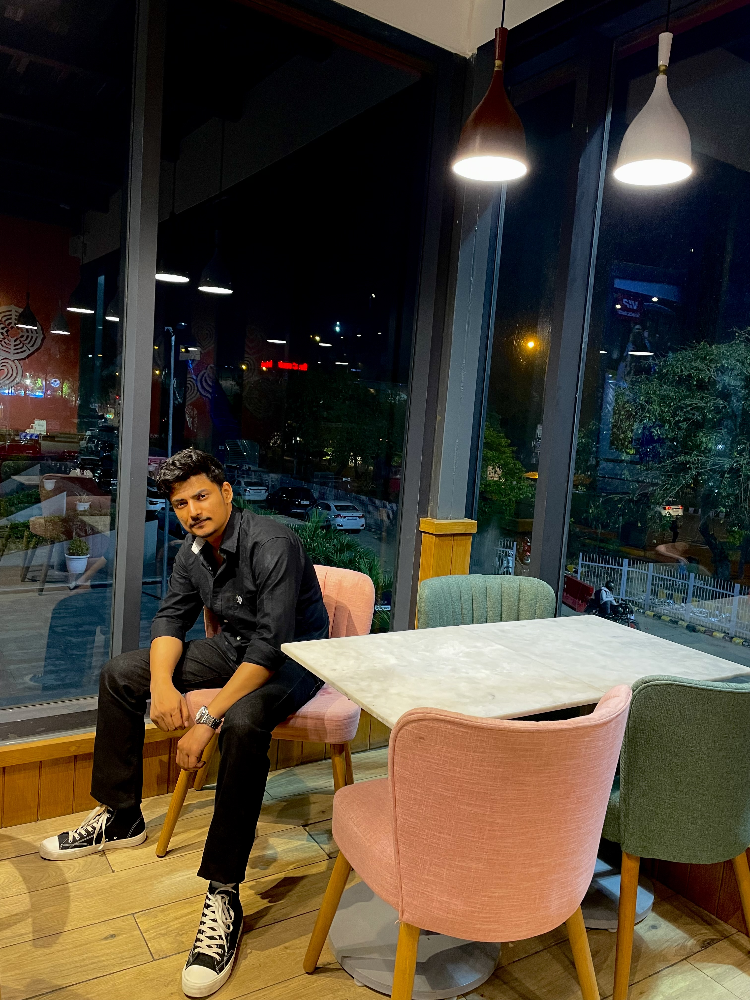

|
Deepak Kumar
|
 |
Affliation
Contact
Hauz Khas, New Delhi,
Indian Institute of Technology Delhi, 110016
E-mail: karndeepak11 [at] gmail [dot] com
Education
Ph.D., IIT Delhi (Present)
M.Sc. in Physics (Gold Medalist), Delhi Technological University (May 2022)
B.Sc. in Electronics, Delhi University (DDUC) (2020)
|
I am currently in P.hD at IIT Delhi.
Research
My current research interests include:
News
(Apr'23) Our paper "Fundamental Limits on Distributed Optimization over Multiple-Access Channel" presented at 2023 IEEE Information Theory Workshops (ITW) , Saint-Malo, France.
(Feb'23) My paper on "Universal gaussian quantization with side-information using Polar lattices" accepted to IEEE Journal on Selected Areas in Information Theory - Special Issue on Modern Compression .
(Feb'23) Invited poster presentation at The PMRF Annual Symposium - 2023 , IIT Madras.
(Jul'22) My research under PMRF scheme has been recognized with the best grade "recommendation with commendation" in May'22 annual review.
(Jun'22) Our paper "Wyner-Ziv compression is almost optimal for distributed compression" presented at 2022 IEEE ISIT, Helsinki, Finland.
Professional Activities
Reviewer: (J) IEEE Transactions on Information Theory (TIT); (C) 2020 IEEE Information Theory Workshop (ITW), 2022 IEEE Wireless Communications and Networking Conference (WCNC)
Useful links: How to apply for INSPIRE?
|